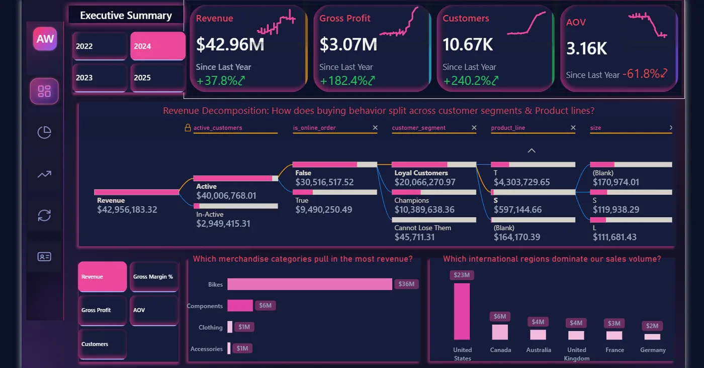

AdventureWorks 2025: end-to-end customer analytics
A customer analytics platform built on Microsoft's AdventureWorks database. I designed a Bronze, Silver and Gold warehouse in SQL Server, loaded it with a metadata-driven SSIS package, modelled it in Power BI, and fitted BG/NBD and Gamma-Gamma models in Python whose predictions are written back to the warehouse.
The part I'm proudest of: I tested the models against simple baselines instead of trusting the totals, found where they failed, and documented why.
7,100+lines of T-SQL across 4 layers
60DAX measures in 6 folders
90-dayholdout used to test the forecast